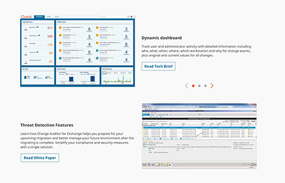
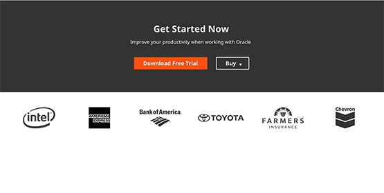
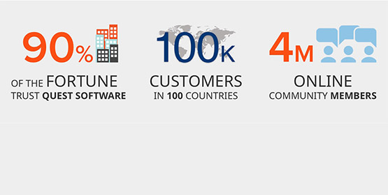
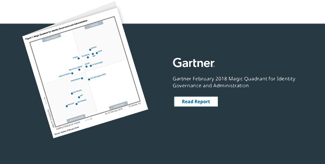

Product Pages Redesign
Mar 2018 |
Project Overview
The goals of this project were to:
- Apply functional minimalism rules
- make product pages more dynamic and flexible to meet business needs
- create a unique identity (theme) for individual business units
- highlight key features of products to help improve user engagement
- improve page navigation
- create clear visual hierarchy and tell an appealing story about the product
- conduct competitive analysis and add any information that can add value to show the benefits of using the product
- align style with Quest branding
- split test new layout to measure success
- implement improvements based on test results
My Role
- Design themes for 2 different business units using product-specific design patterns
- Redesign sticky tabs
- Design different options for a more engaging look for above the fold area
- Design a section to showcase product benefits
- Design different patterns to display key features of the product
- Redesign product tour and improve interaction
- Redesign product resources and develop a prototype to show functionality by hand coding Html, CSS3
- Design a ribbon to show a quote from our customers (reviews)
- Showcase customer logos
- Design a ribbon to show relevant statistics if available
- Design a ribbon to display awards and recognition of the product
- Redesign social share
- Conduct competitive analysis for any new component or concept (Quote, Stats, Awards, Benefits, Hero space, Tour, etc)
Issues
- Text-heavy layout & lack of white space made the page hard to scan and comprehend
- Key features of the products were buried in text and selling points can be easily missed by users
- Lack of flexibility to modify the layout and add new sections
- Lack of interactivity on page components
- Not enough information to support the benefits of using the product
- No uniques identity for different products
Solution
- Visualize data using images or icons related to the content and get rid of heavy text to increase users focus
- Focus o showing only the necessary information of the product based on people's preferences
- Dynamic template concept to enable business units to create flexible content
- Introduce new patterns to increase engagement and user experience
- Visualize existing resources to support benefits (Quote, Awards, Stats, etc)
- Increase the use of live demos and video content on the page
- Design different themes based on product and give a unique look to each business unit
- Apply design aesthetics without cluttering the layout (bigger titles, diagonal lines, abstract shapes, bright colors, etc.
Challenges
- Updating product page template means changing 116 product landing pages and requires a lot of manual work
- All business units need to restructure the information based on the new layout which can be resource intensive
- Training to build new product pages
- Apply the same changes to 6 other international domains which will add to the work of translation and rebuilt of the pages
Design Process Overview
Competitive Analysis for New Components/Concepts
I conducted some analysis to decide what are the concepts that can be introduced to the existing product pages to support the benefits of using the product. I found that many of our competitors are making a good use of showcasing:
- Customer quotes, reviews & ratings
- Industry recognition awards
- Logos of the companies using their products
- Statistics that can always be a great evidence of effectiveness

Competitive analysis to decide missing information to support product benefits

Competitive analysis for new statistics ribbon
Iterations on Mocks
There was a lot of back and forth to get the layout right and make sure the end result is both covering all the requirements of the people who use our products and the business.

Using Frontify platform to capture feedback from stakeholders using annotation tool

Multiple iterations of mockups
Create Unique Themes for Each Business Unit

Light theme background using Toad product line icon and patterns

Dark theme background using Toad patterns and a product short demo playing in loop

Dark theme with product demo video play in place
Highlight Product Benefits & Key Features
Extract key benefits from product datasheet document and use icons to display them

Tabbed view of key features using title, short description, and a product screenshot
Zig zag pattern to show features using screenshots or videos/gifs along with resource call to action buttons
Product tour as an alternative to show screenshots of the product

Display any additional features using icon text structure

Product Tour Design & Functionality
Having this new look will help users to see all the features at once listed in the left hand side panel and pick to view any specific screenshot they want really quick without scrolling through all screeanshots in our old carousel style tour pattern.
Customer Reviews & Quotes

Resources Redesign & Prototyping
Cleaner look by showing additional text and CTA button on assets overlay

Customer Logos & Statistics
Add customer logos right after next steps ribbon for more support
Add big numbers to the page to showcase our public visibility
Awards & Industry Recognition
Multiple awards using tile view

Pattern for only one award
Social Share Redesign
Final Desktop/Mobile Mockups